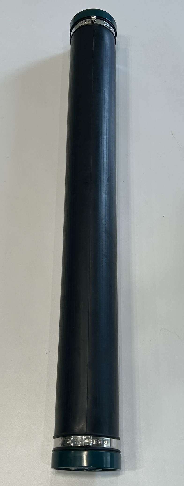

規格先講清楚， 再談交期。
EnviroValor 雄威的細氣泡散氣盤，9 吋標準規格備有現貨，適用市政污水與工業廢水曝氣系統。這一頁把結構、機構、性能、製程與檢驗一次攤開，讓工程端在詢價前就能判斷合不合用。
工程端在意的四件事
交期、品質、效能、可驗證。這四項決定了採購願不願意把你放進合格供應商名單。
現貨供應
標準 9 吋散氣盤備有現貨，可支援緊急專案需求與設備更換安排。
快速交貨
提前備貨與穩定供應安排，協助工程商與污水處理廠縮短採購交期。
穩定曝氣效能
良好氧氣傳輸效率、低壓損與穩定運行特性，適用各類污水曝氣系統。
提供樣品
可依需求提供產品樣品，方便正式採購前進行品質與應用評估。
捲動一次，把結構拆給客戶看
往下捲，五個零件沿軸向分離，件號跟著零件一起拉開。右邊零件表滑到哪一行，圖上就亮哪一顆；反過來也成立。
| 件號 | 名稱 | 材質 | 數量 |
|---|---|---|---|
| 01 | 中心壓板 | PP | 1 |
| 02 | 散氣膜片 | EPDM | 1 |
| 03 | 固定束環 | PP | 1 |
| 04 | 底盤本體 | PP | 1 |
| 05 | 進氣接頭 3/4" | PP | 1 |
通氣開、停氣關，止回這件事用演的
通氣時膜片鼓起、細縫撐開切出 1–3 mm 氣泡；停氣時細縫閉合形成止回，污水回不去管路。按鈕可以現場切給客戶看，沒人操作時每 5 秒自己循環。
數據做成儀表，不是做成行銷數字
指針掃到定位後帶阻尼停住，讀值用等寬字跳動不晃欄，效率條做成一格一格的燈。以下為版型示意值，正式上線需替換為可背書的實測數據。
規格表本身就是最強的動效
右上角切 mm / inch，長度數字滾動換算過去；滑到哪一列，左緣就出現標記。B2B 客戶在網站上停最久的就是這張表。
| 項目 | 規格 | 備註 |
|---|---|---|
| 盤面直徑 | 228 mm | 標準規格 |
| 盤面高度 | 60 mm | 含接頭 |
| 進氣接頭 | 19 mm | 3/4" 螺紋 |
| 有效散氣面積 | 0.038 m² | 膜片有效區 |
| 工作風量 | 2 – 8 Nm³/h | 每盤 |
| 氣泡粒徑 | 1 – 3 mm | 細氣泡 |
| 膜片材質 | EPDM | 可依需求評估 |
| 底盤材質 | PP | 耐候等級 |
從原料到出貨，六站走一遍
托板沿輸送軌移動，走到哪一站哪一站亮起來，下方 log 跟著跳。點任何一站可以直接跳過去。這一段回答的是：東西怎麼做出來、品質哪裡把關。
實品照，圖說用圖號不用標語
遮罩由左往右退開，圖片同時從 1.1 倍縮回原尺寸；游標移上去時卡片沿兩軸微幅傾斜，幅度壓在 4 度以內。



檢驗項目一項一項打勾，最後蓋章
勾是描出來的不是淡入的；檢驗章用 steps 落下，做出「啪」一下的段落感。批號像里程表捲到定位。
PASSED